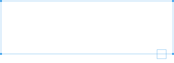

小兒神經醫學會 關心寶寶大腦發展

嬰幼兒在3歲之前就會完成80%腦部發展，若能夠把握3歲前腦部發展的關鍵期，提供均衡營養、多與寶寶互動、給予大腦足夠的刺激，就能為寶寶將來的成長發育、表現打下穩固的基礎。
足夠的營養素是推進寶寶腦部發育的必要能量，提供寶寶如蛋白質、DHA、各類維生素、脂肪、鐵質、神經鞘磷脂、碘、葉黃素、葉酸等營養非常重要，能給予腦部發育穩固的基礎。
3歲前的陪伴互動對於學習發展也是重要的，多留時間和寶寶互動能建構更完整親密的親子關係。親子共讀不僅可促進親子互動與親密感，更有助於促進腦部發育、語言發展及增進理解能力，啟發孩子的想像力及培養其創造力。
在寶寶早期給予各種感官體驗及環境的刺激，可以有效增進大腦突觸連結發展，擁有較好的學習能力。隨著感官經驗的累積，認知能力與心智發展也會逐漸成熟。可透過黑白卡、聽音樂、說故事的方式刺激寶寶的外在學習。